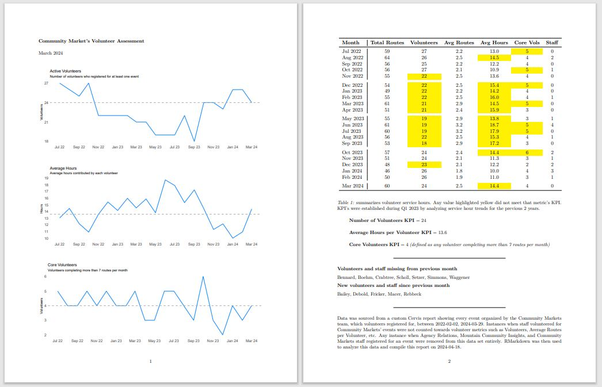

Volunteer Monthly Report
Tools Used: R (Rscript, Rmarkdown)
Scenario:My department relied heavily on volunteer drivers to deliver food to markets. When the number of volunteers began to decrease, the remaining drivers had to cover more routes. This lead to an over-dependence on a few volunteers and frustration among our stakeholders. A lack of volunteers also created inefficiencies for my team: we had to spend time cold calling volunteers to cover routes, and in some cases, had to cover routes ourselves.
My team decided to focus on recruiting and retaining volunteers. However, we needed a tool to gauge the effectiveness of our strategy and better monitor the health of our volunteer pool.
Action:I met with key stakeholders, facilitated the creation of KPIs, and created a monthly report which we could use to monitor our volunteer pool and gauge the effectiveness of our recruitment and engagement strategies.
Technical Walkthrough
1. Volunteer drivers and staff signed up for routes and recorded their hours on a volunteer mangement software called CERVIS. I was able to export a csv file from CERVIS which contained the basic registration details for each route.
2. I then used R to import, clean, and preaggregate this data. Below is an excerpt from my Rscript. I leaned on the tidyverse package and pipes to group and summarize data.
#Designate staff from regular volunteers via their staff email address used in registration
vol_data$staff <- ifelse(grepl("@mannafood", vol_data$email, ignore.case = TRUE), "staff", "no")
#Create a dataframe, time_summary, to summarize each month
time_summary <- vol_data %>%
group_by(activity_month) %>%
filter(staff == "no") %>%
summarize(total_hours = sum(activity_hours),
total_routes= n_distinct(activity_name, activity_date),
total_registrations = sum(participation_count),
volunteers = n_distinct(last_name,first_name),
average_routes_per_vol = (total_routes/volunteers),
average_hours_per_vol = total_hours/volunteers)
3. After cleaning and preparing the data I then used Rmarkdown to read the Rscript and knit a pdf report. I utilized ggplot2 for data visualization, such as with the line chart below.
One detail a stakeholder requested was to incorporate a table into the monthly report. I researched and utilized kableExtra to create this and used the column_spec function to add some conditional formatting: a nice piece of encoding that draws attention to any instance when a KPI was missed.
kable(target_table, col.names = c("Month", "Total Routes", "Volunteers", "Avg Routes", "Avg Hours", "Core Vols", "Staff"), booktabs=TRUE, align = "lcccccc", digits = 1, row.names = FALSE) %>%
row_spec(0, bold = TRUE) %>%
column_spec(1, border_right = TRUE) %>%
column_spec(3, background = ifelse(target_table$volunteers >volnumkpi, "yellow","white")) %>%
column_spec(5, background = ifelse(target_table$average_hours_per_vol >volhourkpi, "yellow","white")) %>%
column_spec(6, background = ifelse(target_table$core_volunteers >corevolkpi, "yellow","white")) %>%
kable_styling(latex_options = "hold_position") %>%
kable_styling(latex_options = "scale_down")
Outcome:This report became a cornerstone of our volunteer program. We gained visibility on our volunteer pool and confidence that our efforts were effective. Crucially, I was able to show upper management that in a 6 month period we grew the size of our volunteer pool by 44% and minimized our dependence on a handful of volunteers. For me this was a great example of how an analytical tool can build confidence and promote transparency. Overtime we also iterated. At the request from my team I built a section in this report which identified if any volunteers failed to register for a route during a month so that we could follow up and reengage them.
Reflection
While my approach on this project created a repeatable and quick workflow, no process is perfect. For instance, having to knit the monthly report in R created a pinchpoint: if my team or a stakeholder wanted a report I would need to run it for them. Training stakeholders how to generate this report independently could be a quick fix, but long term converting this report into a dashboard would be the best way to promote accessibility and use throughout my organization.